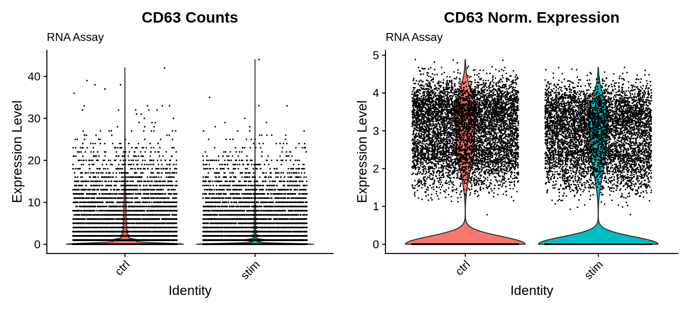
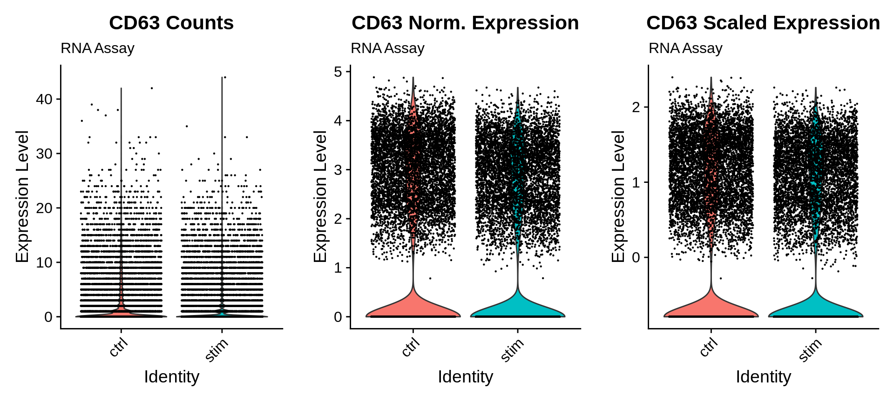
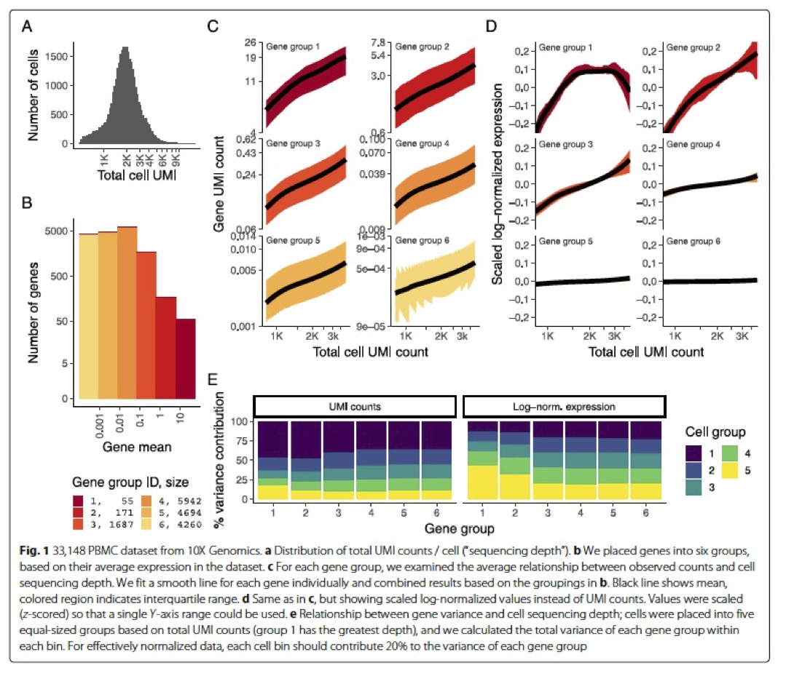
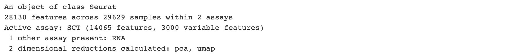
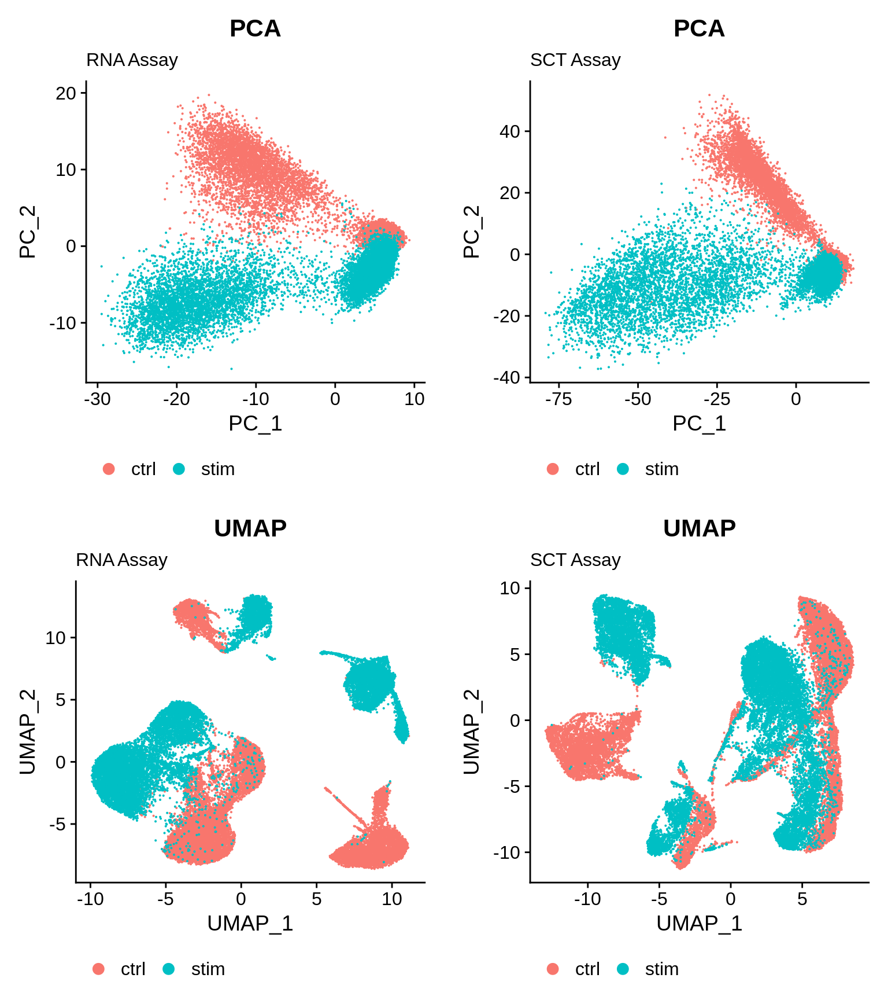
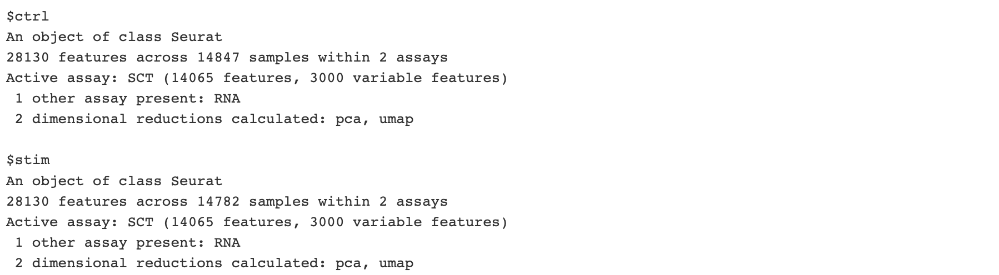
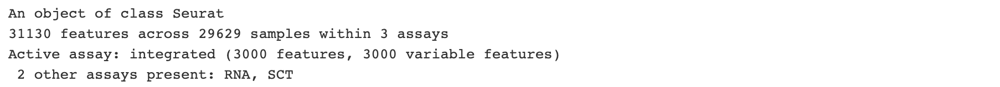
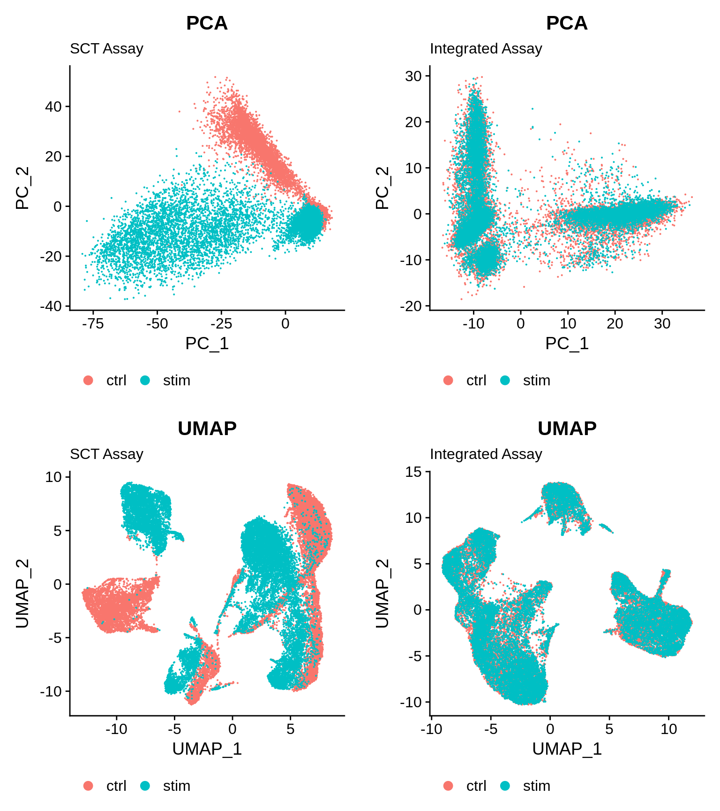

Single Cell RNA Sequencing Normalization, Dimensionality Reduction, and Integration
In this section we will describe procedures for processing scRNAseq data to facilitate downstream analysis, particularly clustering of scRNAseq profiles to identify cell populations. These procedures include
- Normalization
- Dimensionality Reduction
- Integration
We will perform these procedures on our two-sample combined, formatted, and QC'd PBMC scRNAseq data set [Seurat] object generated in the previous sections. Portions of this section have been adapted from previous Tufts HPC describing normalization and integration.
Learning Objectives
- Normalize and reduce the dimensionality of the count matrices
- Integrate data from multiple conditions into a shared space
Setting up R environment
We begin by setting up our R environment similar to the previous sections.
Read in R packages
For this section, requires three R packages:
Seurat: A package for working with and analysis of scRNAseq data. Comprehensive tutorials for available analyses with theSeuratR package are available on the project website.ggplot2: The standard package for creating plots in R. Much of the plotting functions are wrappers forggplot2functionality.cowplot: A nice package for combining plots into a single figure. Specifically we will make use of of theplot_grid()function.
library(Seurat)
library(ggplot2)
library(cowplot)
Set base directory
baseDir <- "~/intro_to_scrnaseq/"
Read in Seurat object
filtered_seurat <- readRDS(file.path(baseDir, "results/merged_filtered_seurat.rds"))
Expression normalization
Even for the same types of cells, the total number of UMIs that are counted is highly variable cell profile to cell profile. Accordingly, the UMI counts for each gene are not immediately comparable as they are proportional to the total number of reads. When performing data normalization we account for this variation by a dividing the reads from each cell by a scaling factor that is a function of the total number of reads of that cell.
Log-transformation
The variance of normalized counts are affected by their magnitude. By performing log-transformation, we partially account for this source of variance, making gene profiles more immediately comparable.
Data normalization and log-transformation can be performed in a single step with the Seurat package with the NormalizeData() function. Below we will run this function and create a new Seurat object, norm_seurat.
norm_seurat <- NormalizeData(filtered_seurat)
Following NormalizeData(), the data "slot" of our RNA assay is not populated by our normalized and log-transformed count data. We can visualize this using the VlnPlot() Seurat function, where we specify the source of gene expression data using the slot argument. Below we visualize CD63 expression.
## Plot CD63 counts
gPlotCount <- VlnPlot(object = norm_seurat,
features = "CD63",
group.by = "sample",
assay = "RNA",
slot = "count") +
ggtitle("CD63 Counts",
subtitle = "RNA Assay")
## Plot CD63 normalized Expression
gPlotNorm <- VlnPlot(object = norm_seurat,
features = "CD63",
group.by = "sample",
assay = "RNA",
slot = "data") +
ggtitle("CD63 Norm. Expression",
subtitle = "RNA Assay")
## Combine plots
plot_grid(gPlotCount, gPlotNorm, nrow = 1)

Cleaning up R environment
Seurat objects contain a lot of data and become quite memory expensive. Especially when working on machines with limited available memory, removing objects we are done with can save headaches down the line. We are done with filtered_seurat so we can now go ahead and remove it.
rm(filtered_seurat)
gc()
Dimensionality reduction
The purpose of dimensionality reduction to capture the majority of variability in our data with fewer features than the 1,000s of genes in our data. By doing so we emphasize sources of variability that are indicative of similar and diverging cell types in our data. We can then use these new variables as input in numerous machine learning algorithms, such many of those employed for cluster analysis. Specifically, through Principal Component Analysis (PCA), we can reduce our matrix of 1,000's to 10's of features (i.e. principal components) that capture the majority of variabilty in our data.
Feature selection
Our Seurat objects is currently comprised of 14,065 features. Prior to running PCA, we will first identify 2,000 genes with high variance in our data. The justification of this is that highly variable genes should capture differences in expression across cell populations. Moreover, is makes calculation of our principal components less computationally expensive. We can perform feature selection using the FindVariableFeatures() Seurat function.
norm_seurat <- FindVariableFeatures(norm_seurat,
selection.method = "vst",
nfeatures = 3000,
verbose = FALSE)
Expression scaling
PCA is highly affected by the scale of values in our data. Accordingly, appropriate application of PCA requires that expression values are scaled to mean = 0, and standard deviation = 1. We can perform this scaling using the ScaleData() Seurat function.
norm_seurat <- ScaleData(norm_seurat)
ScaleData(), the scale.data "slot" of our RNA assay is not populated. Below we visualize CD63 expression of all three of out expression data slots.

Now that we have our scaled data comprising 2,000 genes, we can perform PCA, using the RunPCA() Seurat function.
norm_seurat <- RunPCA(norm_seurat)
Next, we can visualize our first two principal components using the PCAPlot() Seurat function. Additionally, we will color our points by samples, "ctrl" and "stim", to evaluate whether variability in our data reflects these differences.
pPlot <- PCAPlot(norm_seurat, group.by = "sample") +
ggtitle("PCA",
subtitle = "RNA Assay") +
theme(
legend.position = "bottom"
)
pPlot

Uniform manifold approximation
We just visualized the first two principal components in our data. However, it is more than likely that important variability in our data is captured by additional principal components. Uniform manifold approximation (UMAP) is a procedure for visualizing many variables in two dimensions. Importantly, UMAP should only be considered as a visualization tool, and our PCA matrix is what is leveraged in downstream clustering analyses. Next, we'll run UMAP with the RunUMAP() Seurat function, on the first 10 principal components using the dims argument.
norm_seurat <- RunUMAP(norm_seurat, dims = seq(10))
Now we can visualize our UMAP output side-by-side with our first two principal components.
uPlot <- UMAPPlot(norm_seurat, group.by = "sample") +
ggtitle("UMAP",
subtitle = "RNA Assay") +
theme(
legend.position = "bottom"
)
plot_grid(pPlot, uPlot, nrow = 1)

Alternative expression normalization and scaling with SCTransform()
In the Hafemeister and Satija, 2019 paper the authors explored the issues with simple transformations. Specifically they evaluated the standard log normalization approach and found that genes with different abundances are affected differently and that effective normalization (using the log transform) is only observed with low/medium abundance genes (Figure 1D, below). Additionally, substantial imbalances in variance were observed with the log-normalized data (Figure 1E, below). In particular, cells with low total UMI counts exhibited disproportionately higher variance for high-abundance genes, dampening the variance contribution from other gene abundances.

The proposed solution was the use of Regularized Negative Binomial Regression, as implemented in the Seurat SCTransform() function. This approach
- Does not assume fixed number of UMI counts per cell
- Normalizes expression values based on their Pearson residuals from negative binomial regression of UMI counts of each gene against total UMI counts of each profile.
In the next code chunk, we demonstrate usage of the SCTransform() function. DO NOT RUN THIS. SCTransform() is more computationally expensive and takes several minutes to run. Instead we will read in a a saved norm_seurat object, for which SCTransform() has been performed.
### DON'T RUN!!
norm_seurat <- SCTransform(norm_seurat)
Read in SCTransorm() Seurat object
norm_seurat <- readRDS(file.path(baseDir, "data/normalized_seurat.rds"))
Rather than replacing the data in our RNA assay, SCTransform() creates a new assay SCT, and sets it as the default assay. This new assay contains fully populated count, normalized, and scaled data, in the count, data, and scale.data slots, respectively.
norm_seurat

DefaultAssay(norm_seurat)
Importantly, Seurat functions will generally use the active (i.e. default) assay unless otherwise specified. Since SCT is now our e can re-run our PCA and UMAP on the SCTransform() scaled data using the same commands. Importantly, this will overwrite these matrices in our Seurat object because these are stored separately from assays.
## Run PCA on SCT assay
norm_seurat <- RunPCA(norm_seurat)
## Run UMAP on first 10 PCs from updated PCA matrix
norm_seurat <- RunUMAP(norm_seurat, dims = seq(10))
Next, we will visualize our PCA and UMAP results calculated from our SCT assay side-by-side with those calculated from our RNA assay.
## Plot SCT PCA results
pPlotSCT <- PCAPlot(norm_seurat, group.by = "sample") +
ggtitle("PCA",
subtitle = "SCT Assay") +
theme(
legend.position = "bottom"
)
## Plot SCT UMAP results
uPlotSCT <- UMAPPlot(norm_seurat, group.by = "sample") +
ggtitle("UMAP",
subtitle = "SCT Assay") +
theme(
legend.position = "bottom"
)
# Combine Plots
plot_grid(pPlot, pPlotSCT,
uPlot, uPlotSCT, nrow = 2)

Regardless of our normalization approach, it is clear that much of the variability in our data arise from differences between the data sets. This may arise from various sources. For one, our two samples represent two different conditions, i.e. control and interferon beta-treatment. Alternatively, these difference can arise from numerous technical factors during sample collection and library preparation, akin to "batch" effects, which are common in RNAseq experiments.
Importantly, we expect to find most if not all of the same cell types represented these samples/conditions, and we will seek to characterize these cell types via clustering analysis. Thus, we'd like cells of the same type to cluster together in order to make these results more interpretable and cell types easier to characterize.
Next, we will perform data integration to "harmonize" the expression profiles across these samples with the goal of overlaying transcriptomic profiles of shared cell types.
Data Integration
The data integration workflow from the Seurat package is carried out in four main steps
- Identification of shared highly variable genes across data sets, performed by the
SelectIntegrationFeatures(). - Ensure that each data set has been normalized and scaled based on these features, performed by
PrepSCTIntegration(). - Scores the relative similarity of individual cells across data sets, performed by
FindIntegrationAnchors(). This is actually performed in two sub-steps: - Canonical Correlation Analysis (CCA)
- Mutual Nearest Neighbors (MMN)
- Projects the expression profiles of individual cells to be more similar to their counterparts across data sets, performed by
IntegrateData().
Canonical Correlation Analysis (CCA)
The implementation of CCA in Seurat is effectively very similar to PCA. Whereas with PCA we seek to capture the majority of variability in a single data set in in a few features, with CCA we seek to capture the majority of "shared" variability between data sets in fewer features. Thus after implementing CCA we should obtain a set of features with reduced sample-specific variability that should capture shared signal of cell types represented across samples.
Mutual Nearest Neighbors (MNN)
MNN comprises two main steps. First, for each profile we identify its "K" most similar cell profiles ("nearest neighbors") in the other data set based on their CCA features. Second, "Mutual nearest neighbors" are instances in which pairs of inter-data set cell profiles are complementary identified as nearest neighbors of one another. When we perform integration, the expression of each cell profile in one data set will be projected to be more similar to its MNN counterparts in the other data set.
We begin by splitting our Seurat object into a list object of two Seurat objects for each sample, "ctrl" and "stim", with the SplitObject() Seurat function.
split_seurat <- SplitObject(norm_seurat, split.by = "sample")
split_seurat

At this point we will not be doing anything with our norm_seurat object. So let's remove it to save space.
rm(norm_seurat)
gc()
**Sadly, at this point the following integration steps are quite memory expensive and slow. For this reason we give an example of how to run the integration workflow, but we will skip running the code. Instead will read in a previously integrated Seurat object generated by these steps.
Select integration features
## DON'T RUN!
integ_features <- SelectIntegrationFeatures(object.list = split_seurat,
nfeatures = 3000)
Prepare the SCT list object for integration
## DON'T RUN!
split_seurat <- PrepSCTIntegration(object.list = split_seurat,
anchor.features = integ_features)
Perform CCA and identify mutual nearest neighbots
## DON'T RUN!
integ_anchors <- FindIntegrationAnchors(object.list = split_seurat,
normalization.method = "SCT",
anchor.features = integ_features)
Integrate data
## DON'T RUN!
integ_seurat <- IntegrateData(anchorset = integ_anchors,
normalization.method = "SCT")
Read in integrated Seurat object
integ_seurat <- readRDS(file.path(baseDir, "data/integrated_seurat.rds"))
Similarly to when we ran SCTransform(), the integration workflow results in new assay in our Seurat object, integrated and set it as the active (default) assay.
integ_seurat

DefaultAssay(integ_seurat)
Check integrated data set
Now that we have performed the integration procedure, we can interrogate our integrated assay for differences between samples using dimensionality reduction.
As before we'll re-run PCA, followed by re-running UMAP on the first 10 principal components.
## Run PCA on integrated assay
integ_seurat <- RunPCA(integ_seurat)
## Run UMAP on first 10 PCs from updated PCA matrix
integ_seurat <- RunUMAP(integ_seurat, dims = seq(10))
Finally, we will visualize our PCA and UMAP results calculated from our integrated assay side-by-side with those calculated from the SCT assay of the un-integrated data.
## Plot integrated PCA results
pPlotInt <- PCAPlot(integ_seurat, group.by = "sample") +
ggtitle("PCA",
subtitle = "Integrated Assay") +
theme(
legend.position = "bottom"
)
## Plot integrated UMAP results
uPlotInt <- UMAPPlot(integ_seurat, group.by = "sample") +
ggtitle("UMAP",
subtitle = "Integrated Assay") +
theme(
legend.position = "bottom"
)
# Combine Plots
plot_grid(pPlotSCT, pPlotInt,
uPlotSCT, uPlotInt, nrow = 2)

That's it! Now, we have a fully processed and integrated data set. In the next section we will go over procedures for clustering scRNAseq to facilitate cell population identification.
You can now open "05_clustering.Rmd" to continue on the the next section.